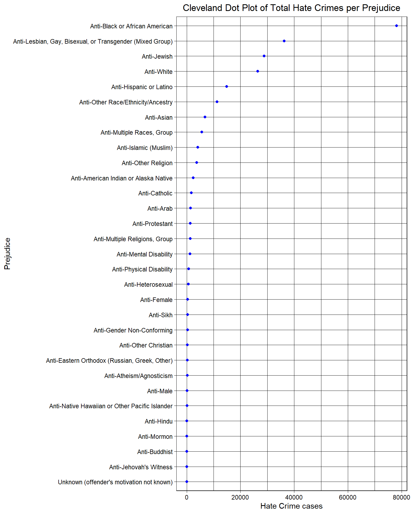

Chapter 4 Results
4.1 Trends of hate crime: Overall rise, but there were also periods of Depression
The following shows the trend chart of yearly reported hate crime cases reported. As can be seen from the figure, hate crime cases increased most sharply in 1991-1992, 1994-1995, 2000-2001, and 2019-2020. Conversely, the decline was the most dramatic from 1993-1994, 2001-2002, 2008-2009, and 2012-2013.
From 2001 to 2014, the total number of hate crime cases showed a general trend of decline. However, from 2014 to 2020, the total number of hate crime cases in the United States increased dramatically.
In the whole chart, 1991 had the lowest number of hate crime cases. On the other hand, 2020 has the highest total number of hate crime cases.
We know the year has something to do with how long a U.S. president has been in office. Based on this picture, we will answer the question of which presidential administration had the highest or lowest hate crime incidents in the third subsection.
4.2 Black or African American people were the most discriminated against
The plot shows the number of total hate crimes for each prejudice. As can be seen from the Cleveland dot chart, Black or African Americans are the groups most attacked by hate crime(almost 70,000 reported incidents). Asians, however, were the seventh most attacked group(over 7,000 reported incidents). Please note that our graph here only shows the total number of incidents involving people who have been attacked over the last 20 years, as opposed to the most vulnerable group. We will take the graph results to analyze the relationship between the total number of people attacked in different categories under different presidents.

4.3 Whites discriminated against other races the most, while Blacks preferred to discriminate against Whites
The following graph shows the relationship between the attacker’s and the victim’s race. Note we will ignore the Unknown offender race in this case. We found that when Black or African American people were attacked, White people attacked them the most, by a significant margin. We also found that White people were the most aggressive toward all groups except toward Jewish. Most Anti-White hate crimes were committed by Black and White people.

4.4 The frequency of Hate Crimes is the highest under Donald Trump, but it is not obvious
Because each U.S. president has a different number of years in office, comparing total hate crime cases here would be unfair. So we divided the number of hate crime cases during each president’s tenure by the number of years in office to get the hate crime rate for each president. We found that Donald Trump had the highest hate prime rate and George Bush(1st term) had the lowest. But the difference between the three presidents with the highest rates is not obvious.

At the same time, we can also draw a trend chart of the changing relationship of prejudice overtime during the tenure of different presidents. We found an increase in all kinds of prejudice during the first George Bush administration. During the Bill Clinton period, the general trend of Anti Black or African American was up, while the general trend of Anti White was down. All kinds of prejudice in the second George Bush years were in a lull (neither rising nor falling). The overall trend of Anti-Black or African American decline under the Barack Obama administration differs from any other period. While Anti-Black or African American trends have risen sharply under Donald Trump years, different kinds of prejudice have crept up.
4.5 White people have the most recorded Hate Crimes
Note here we ignore the unknown case since it tells nothing. Through this bar chart, we can find that most of the reported hate crime cases were committed by White people, which is a lot higher than the Black or African American group that ranks second. We can find that Asians are less likely to be offenders.
4.6 Top Offense Types of Hate Crimes
This image shows all types of offense types. We found that Destruction/Damage/Vandalism of Property, Intimidation, Simple Assault , and Aggravated Assault are the most popular. And the total number of incidents is far ahead of the latter category. Therefore, we will use these four key offense types to draw the relationship between Offense type and Prejudice.
We took the top four offense types in the figure above and the top seven prejudice types of drawing this grouped bar chart. This chart shows the total number of hate crimes motivated by each kind of prejudice for each type of hate crime. The majority of each type of hate crime is motivated by an Anti-Black or African American prejudice, with Intimidation and Destruction/Damage/Vandalism of Property being the most common type of hate crimes motivated by this prejudice. Anti-Black or African American prejudice has the highest percentage in every offense type. In addition, we found that the percentage of Anti-Jewish prejudice in the Destruction/Damage/Vandalism of Property offense type is particularly high. The LGBT community also makes up a significant portion of every offense type.
This mosaic graph shows the relationship between Offender Race and Offense Type. Note these results ignore the Unknown Offender Race. We found that Whites made up the most significant portion of the top 4 offense types, followed by Blacks or African Americans.

4.7 The total number of Hate Crimes at the end or beginning of the year is relatively small
By observing the bar chart below, we can find that September and October are the periods of high incidence of hate crimes, while December is the period of low incidence of hate crimes
4.8 The West and Northeast regions have the highest Hate Crime records
We found that the West region has the highest reported Hate Crime cases, and U.S. Territories has the least number. Here U.S. Territories stands for Guam, which makes sense since it has a small population. The Midwest has the lowest number of hate crimes in the continental United States.